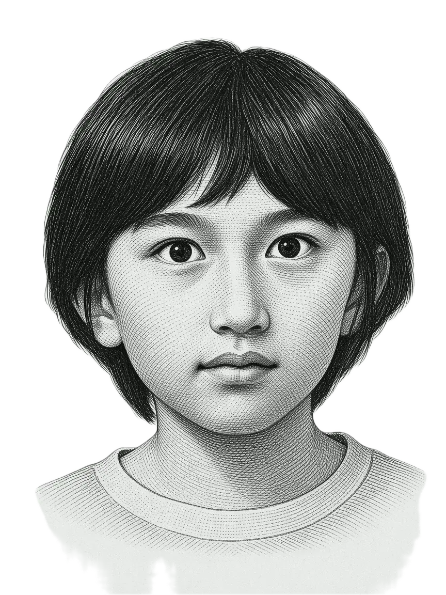
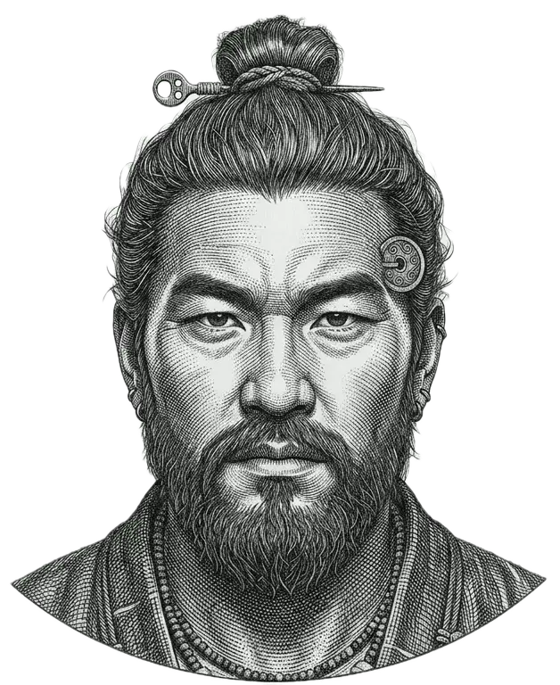
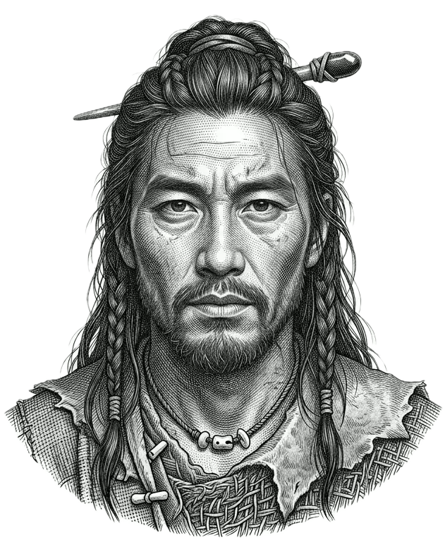
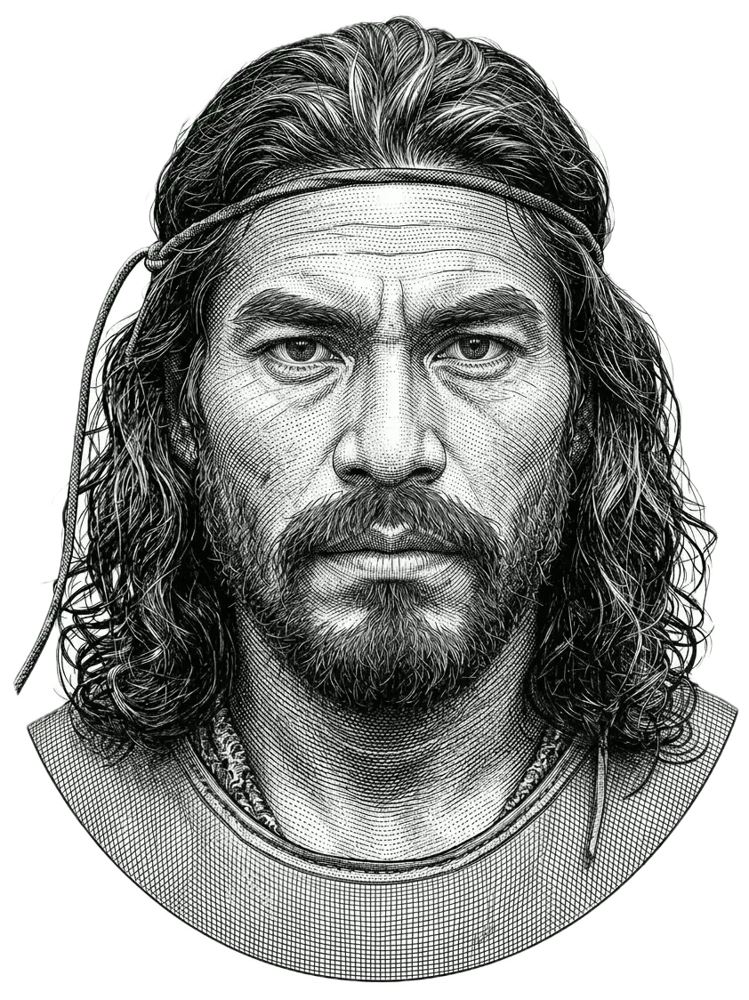
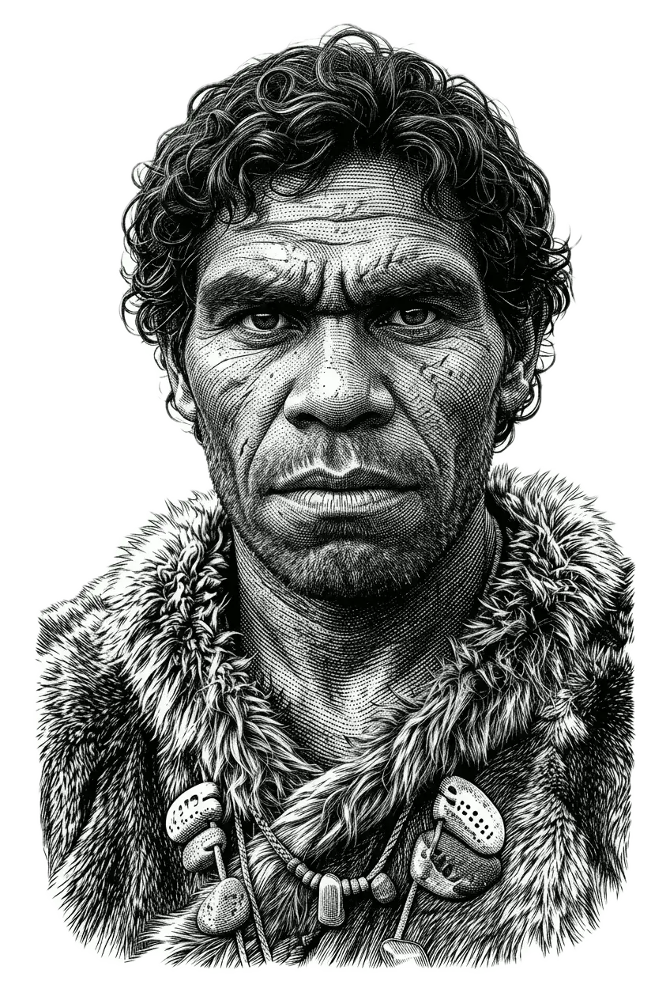

深層祖先記録
松下・ジュリアン
一つのゲノムの考古学的発掘
東バルカン半島 · 琉球列島 · ユーラシア草原 · ５万年の歴史
要約

ジュリアンネノフ
二つの祖先の流れ、一つのゲノム
以下、七つの層が続きます。それぞれ前の層より数千年ずつ古くなっていきます。しかしこのゲノムは、二つの別々の系統を同時にたどる一つの物語です。どちらかに掘り進む前に、発掘全体が示すものを見てみましょう。
ジュリアン・ネノフのゲノムは、真の二重祖先プロフィールです。父系はおよそ半分が東バルカン系、母系はおよそ半分が琉球系日本人です。MyHeritageの結果は日本人（沖縄）61.6%、バルカン系21.2%、ギリシャ・アルバニア系10.8%と表示しています。これらのラベルは家系図上の割合として読むべきではありません。アルゴリズムが現代の参照集団に対応づけている、ほとんど重なり合わない二つの祖先の流れを反映しているのです。「沖縄」という表示は特に重要な情報を伝えています——それは本土の日本人祖先に典型的なものよりも強い縄文狩猟採集民の成分を示しています。
父系側では、ジュリアンは父ミンコを特徴づける東バルカン系の連続体を受け継いでいます。最も近い現代の一致は依然としてブルガリア人および関連するバルカン系集団ですが、母系の東アジア系の寄与によって希釈されています（ブルガリア人までのG25距離 約0.126）。より深い構造は典型的なバルカンのパターンを反映しています——実質的なパレオバルカン（アナトリア新石器時代プラス現地）基層、アナトリア農耕民とポントス草原（ヤムナヤ関連）祖先とのバランスの取れた、やや農耕民寄りの青銅器時代の統合、より小さな西ヨーロッパ狩猟採集民の寄与、そして中世ブルガリア集団を形成したスラブ民族の移動による後の形成です。
母系側では、シグナルは本土の日本人ではなく、明確に琉球系です。古代DNAの比較は、東アジア系の成分を漢族よりも縄文狩猟採集民に近い位置に置いており、琉球列島に特徴的な、弥生以前の祖先がより多く保たれていることと一致します。副次的な北東アジア／内陸アジア草原関連のシグナルも存在し、中央アジア系のパーセンテージと、中世モンゴルの参照集団との異例に近い古代の一致の両方を説明します——これは直接的なモンゴル系祖先というより、西ユーラシアと東ユーラシアの変異の幾何学的な中間点として理解するのが最適です。
もう一つ触れておきたい点があります。父系と母系の血統がこれほど古くに分岐したため、ジュリアンのゲノムに見られる二つの古代人類種のシグナルは同一ではなく非対称です——ネアンデルタール人の祖先は同じ古代の出来事から両親を通じて届きますが、縄文人とアンダマン諸島のオンゲ族を通じてたどれるかすかなデニソワ人関連のシグナルは、母方からのみ届いています。
| 層 | 最も近い一致 | 距離 |
|---|---|---|
| 現代集団（父系） | ブルガリア人 | 0.126 |
| 最も近い古代の一致（全体） | モンゴル・アルハンガイ初期中世 | 0.094 |
| 青銅器時代（父系） | ヤムナヤ／アナトリア新石器時代 | 0.195／0.206 |
| 中石器時代（母系） | 縄文人（漢族より近い） | 0.407／0.478 |
要点： 真の二重系統ゲノム——東バルカン系（父系）と琉球系日本人（母系）がほぼ等量で、縄文の色濃い「沖縄」シグナルが際立っています。
遺伝的層序
左の列は父系（東バルカン）の系統を、右の列は母系（琉球）の系統をたどります。
カードは、深い時間を圧縮した一本の縦の時間軸上に、各参照サンプルのおおよその年代で配置されています。
色付きのゾーンは、ジュリアンの再構成された系統に含まれる集団を示します。
短い目盛りは、距離の測定にのみ用いた比較用の参照集団（例：漢族・河南）を示します。
ネアンデルタール人との混血の時期は両方の列に現れます。
かすかなデニソワ人関連のシグナルは母系側にのみ現れます。
 スラブ系
スラブ系祖先
 トラキア系
トラキア系祖先
 ヤムナヤ系
ヤムナヤ系祖先
 EHG
EHG祖先
 CHG
CHG祖先
 WHG
WHG祖先
 ネアンデルタール系
ネアンデルタール系祖先

弥生系祖先

漢族・河南参照

縄文系祖先

デニソワ系祖先
混血イベントの時期：約5万〜6万年前
表層
ラベルが伝えていること — そして伝えていないこと
すべての祖先報告書はパーセンテージと地名から始まります。ジュリアンのMyHeritage結果は、日本人61.6%（沖縄）、バルカン系21.2%、ギリシャ・アルバニア系10.8%、東ヨーロッパ系3.9%、中央アジア系2.5%と表示されています。これらの数字をそのまま読むと、異なる祖先集団がそれぞれ別々の割合を提供したかのように見えます。しかしこの読み方は正確ではなく、それを訂正するところから本当の物語が始まります。
これらのパーセンテージは、家系図が示すような祖先の割合ではありません。アルゴリズムがジュリアンのDNAを現代の参照集団と比較し、どの現存集団に最も似ているかを問うた出力です。参照パネルが違えば数値も変わり、同じゲノムを別の計算機にかければ別のパーセンテージが出ます。
この結果が本当に伝えているのは、ジュリアンのゲノムにはほとんど重なり合わない二つの大きな祖先の流れがあるということです。一つは東バルカン——現代のブルガリア人、ルーマニア人、関連集団の遺伝的世界——にたどれます。もう一つは南日本の琉球諸島にたどれ、古代の縄文狩猟採集民の祖先が多いことで特徴づけられる地域です。
「沖縄」という表示は、この報告書全体で最も重要な詳細です。本土の日本人は通常10〜15%の縄文系祖先を持ちますが、沖縄の人々は最大で約40%を持ち得ます。後の弥生農耕民の拡大が琉球には不完全にしか及ばなかったためです。アルゴリズムは、通常の本土日本人の祖先から予想されるよりも強い縄文のシグナルを検出しています。
中央アジア系の小さなパーセンテージは、独立した祖先集団ではありません。父系側ではわずかな痕跡（深い草原とのつながりを通じて）として、母系側ではより大きなシグナル（北東アジア系の祖先を通じて）として現れます。その意味はより深い層で明らかになります。
要点： ラベルは発見そのものではありません——パーセンテージは参照パネルの出力にすぎず、どの計算機でも変わらないのは、東バルカン系の極と縄文に近い東アジア系の極という二つです。
現代
集団
現代集団の地図 — ジュリアンが今どこに位置するか
ジュリアンのDNA座標——MyHeritageの生データから世界中の研究者が使用する標準的な遺伝的参照空間に直接投影されたもの——を現代集団の平均値と比較すると、最も近い一致はブルガリア人、距離0.126です。これは境界的または曖昧な結果ではありません。父系の東バルカン系祖先がジュリアンの遺伝的プロフィールで最も強い単一の極であり、約61%の東アジア系祖先の背景の中でも測定可能であるという明確なシグナルです。
父と息子の比較は、希釈の度合いをはっきり示しています。父親の最も近い一致はルーマニア人（0.018）とブルガリア人（0.021）で、考えられる限り最も緊密な適合の一つです。ジュリアンのブルガリア人までの距離は0.126で、約6倍大きく、まったく異なる地域からの大幅な混血から予想されるとおりです。同じ集団が今も同じ方向に引き寄せていますが、母方の寄与によって薄められたのです。
２番目に近い現代集団はモンゴル人（0.356）で、次いで日本人（0.479）、韓国人（0.487）です。モンゴル人が日本人より上位にあることは、ジュリアンにモンゴル人の祖先がいることを意味しません。彼のゲノムの東アジア系成分が、遺伝空間で現代日本人の平均よりもモンゴル人の平均に近い位置にあるということで、より深い層がこのパターンの理解を助けます。
二集団オラクルは、異なるレンズを通して同じ根本的な姿を返します。おおよそ日本人50%＋ルーマニア人50%、または韓国人50%＋ルーマニア人50%です。単一集団の計算機はしばしばウイグル人やウズベク人を返しますが、それは中央アジア系祖先のためではなく、それらの集団自体が西ユーラシアと東ユーラシアのほぼ50対50の中間点にあり、便利な幾何学的代用になるからです。
MyHeritage民族推定
| 日本人（沖縄） | 61.6% |
| バルカン系 | 21.2% |
| ギリシャ・アルバニア系 | 10.8% |
| 東ヨーロッパ系 | 3.9% |
| 中央アジア系 | 2.5% |
G25距離 — 現代集団
| ブルガリア人 | 0.126 | |
| モンゴル人 | 0.356 | |
| 日本人 | 0.479 | |
| 韓国人 | 0.487 |
GEDmatchの二集団オラクルは同じ現実を別の角度から確認します。Eurogenes K13は最良の二集団一致として日本人50%＋ルーマニア人50%（距離3.84）を見つけます。Dodecad K12bは韓国人50%＋ルーマニア人50%（距離4.91）を見つけます。これらは矛盾しているのではなく、異なる参照レンズを通じて同じ現実を反映しており、韓国人と日本人は東アジア成分の代替可能なプロキシとして、ルーマニア人は父親の東バルカン系ゲノムに最も近いプロキシとして機能しています。単集団計算ツールはウイグル族やウズベク族を最も近い一致として返しますが、これはジュリアンに中央アジアの祖先があるからではなく、それらの集団自体が約50%西ユーラシア系と50%東アジア系であり、真に両方であるプロフィールに最も近い利用可能な単集団近似値だからです。
要点： 出てくる集団はすべて祖先ではなく代用です——本当の姿は、バルカン系のシグナル（ブルガリア人、0.126）と東アジア系のシグナルがほぼ等量で存在するということです。
中世
500〜1200年
中世の層——スラブ民族の移動と父系の形成
現代集団のラベルという表層を取り除くと、最初の歴史的な層に到達します。ジュリアンの父系ゲノムが最もよく似ている集団を形作った、中世の移動です。
西暦6〜8世紀にかけて、スラブ語を話す集団がプリピャチ地方からバルカンへ拡大しました。父系ゲノムの分析では、スラブ系の寄与はおよそ32%で、直接の東方ルートではなくパンノニア回廊を経て到来したとされます。より大きな成分——約48%——は、すでに存在していたパレオバルカン基層（トラキア系、ダキア系、イリュリア系、ローマ化した現地集団）です。さらに約20%のビザンティン地中海的オーバーレイは、東ローマの数世紀にわたる存在を反映しています。これらの流れが合わさって、ジュリアンの最も近い現代の一致であり続ける中世ブルガリアの遺伝的プロフィールが形成されました。
このビザンティン時代の成分は、ラベルが誤解を招きやすいため、詳しく見る価値があります。ローマ時代のバルカンの古代DNA研究では、数世紀にわたるローマの政治的・軍事的支配にもかかわらず、鉄器時代のイタリアからの入植者の遺伝的痕跡は見つかっていません——代わりに、帝政期には、おおよそ西暦1〜3世紀という比較的狭い期間に集中して、アナトリアと西アジア由来の祖先の流入があったことが記録されています。その後のビザンティンの数世紀は、同程度の規模の第二の波をもたらしたのではなく、交易、行政、人口移動を通じてこのアナトリアとバルカンのつながりを維持しました。以下のK36の内訳にある「イタリア」成分は、ローマ人入植者に特有の由来ではなく、この広い地中海・アナトリア的親和性を反映しています——現代の集団遺伝学の計算機が便宜上、国名のラベルを借りている場合でも、古代の遺伝データははっきりとこの区別を示しています。
ジュリアンは、この父系の形成全体をゲノムのおよそ半分として受け継いでいます。各計算機のヨーロッパ系成分は、これを東バルカン＋東地中海＋東ヨーロッパの署名として一貫して再構成しています。
古代DNAデータベースでジュリアンに最も近い古代の一致を検索すると、結果はモンゴル・アルハンガイ初期中世、距離0.094で、テストした集合の中のどのヨーロッパ系・日本系の古代サンプルよりも近くなります。これはモンゴル系祖先を示すものではありません。中世の内陸アジアは西ユーラシアの草原世界と東アジア世界の遺伝的な交差点にあり、真に50対50の東西ゲノムに異例なほどよく合う幾何学的な中間点になっているのです。
| 古代集団 | 距離 | |
|---|---|---|
| モンゴル・アルハンガイ初期中世 | 0.094 | |
| 韓国・チャンハン | 0.382 | |
| 日本縄文狩猟採集民 | 0.407 | |
| 漢族（河南省） | 0.478 |
要点： 最も近い古代の一致であるモンゴル・アルハンガイ（0.094）は、隠れたモンゴル系の祖先ではなく、西と東の中間点です。父系側は、スラブ時代の混合によって形作られたパレオバルカンの基盤です。
青銅器時代
紀元前3000〜1200年
青銅器時代の層——両方向からの草原牧畜民
中世の層の下を掘り進むと、ジュリアンの祖先の両側の土台となる青銅器時代の基盤に到達します。古代DNAの姿が構造的に明確になるのはここです。モデルC——ジュリアンの座標を、ヨーロッパ系祖先の三つの起源の流れを表す古代集団と照合するもの——では、ヤムナヤとアナトリア新石器時代は近く明確に分離される一方、縄文と漢族はずっと遠くなります：
| 古代集団 | 距離 | |
|---|---|---|
| ロシア・サマラ青銅器時代ヤムナヤ | 0.195 | |
| トルコ・ボンジュクル新石器（アナトリア新石器） | 0.206 | |
| 日本縄文人SG | 0.400 | |
| ルクセンブルク・ロシュブールWHG | 0.425 | |
| 漢族（河南省） | 0.478 |
ヤムナヤ（0.195）とアナトリア新石器時代（0.206）はモンゴル中世に次いで最も近い二つの古代集団であり、どちらも明確に父系由来です。これらは東バルカン系ゲノムの二つの最大の創設的流れを表しています。約８０００年前にバルカン半島に到達したアナトリアの農耕民と、約５０００年前にポントス・カスピ海草原からヨーロッパに押し寄せたヤムナヤとして知られる青銅器時代の草原牧畜民です。
ヤムナヤはヨーロッパの先史時代で最も重要な集団の一つです。ポントス草原で東部狩猟採集民とコーカサス狩猟採集民が融合して生まれ、紀元前3000年頃にあらゆる方向へ驚異的なスピードで拡大し、馬、車輪付き乗り物、そして現代ヨーロッパの大半の言語の祖先となる印欧祖語を携えてきました——ブルガリア語も含め、父親が話す言語です。ジュリアンのゲノム全体の約25%がこの単一の青銅器時代の拡大に由来し、父系のバルカン血統を通じて届いています。
モンゴル・アルハンガイ初期中世の距離0.094が示唆し始めること——そして以下の母系の層がさらに展開すること——は、草原関連のシグナルが東方向からも、母の祖先を通じて届いているということです。これらは同じ草原集団ではありません。ヤムナヤはポントス草原から西へ拡大しました。ジュリアンの母系の祖先につながる内陸アジアの草原世界は、同じ広大な草地システムの別の東方の腕を越えて拡大しました。ジュリアンはユーラシア草原の両端から草原関連のDNAを持っています。一方はブルガリア人の父から受け継いだ西の草原、もう一方は琉球人の母を通じて届いた東の草原であり、彼女自身の遺伝的歴史には北東アジア大陸的成分が含まれています。
GEDmatchの染色体ペインティングは、青銅器時代の姿を視覚的に裏づけており、直接読み取る価値があります。父系の行を見ると、ジュリアンの染色体全体で最も密で一貫したオレンジ色のシグナルは、ヤムナヤの行ではなくバルチン・アナトリア新石器時代の個体から来ています——複数のバルチンのサンプルが、ほぼすべての染色体で強い対立遺伝子の重なりを示しています。ヤムナヤとサマラ草原の行も確かに存在しますが、視覚的にはバルチンに次ぐものです。この相対的な密度には意味があります。それは東バルカンの遺伝的プロフィールを反映しており、そこではより北のヨーロッパ集団に比べて、アナトリア新石器時代の農耕民系祖先が通常、草原系祖先を上回ります。同様に注目すべきはハンガリー新石器時代とハンガリー青銅器時代のサンプルで、ペインティング全体で強く一致する代用として現れます。これらは別個のハンガリーからの流入の証拠ではなく、パンノニア回廊そのものの遺伝的署名です。ハンガリー盆地にすでに住んでいた青銅器時代の集団は、同じ回廊を南下するスラブ民族の移動に吸収され、その祖先はバルカンに届く前に波の中に織り込まれました。ペインティングのハンガリーの行は、その通過の染色体レベルの記録です。スウェーデンのモタラ狩猟採集民の行は存在しますが比較的まばらで、東バルカンのプロフィールが、スカンジナビアや北ヨーロッパの集団が示すよりも低い西ヨーロッパ狩猟採集民の割合を持つことと一致しています。
以下のグラフはジュリアンのGEDmatch染色体ペインティングで観察されたアレル重複密度の相対的な強度をまとめたものです——各参照集団の行が22染色体全体でどれだけ一貫してオレンジ色を示すか。これは祖先のパーセンテージではなく、シグナル強度の定性的なランキングです。ゲノムの両側を示しています。父系の西ユーラシア系を左側に、母系の東アジア系を右側に。
要点： ほぼ等しい二つの流れ——父系ではアナトリアの農耕民がヤムナヤの草原系祖先を上回り、別個の東方の草原関連シグナルは母を通じて届いています。
新石器時代
紀元前7000〜3000年
新石器時代の層 — 西側からの農耕民
父系側の青銅器時代の草原の層の下には、ジュリアンのゲノムへの最も古い実質的なヨーロッパの寄与があります：約8000年前からアナトリアからヨーロッパへ農耕を広めた初期新石器時代の農耕民です。K10 Ancient計算機は、ジュリアンに初期新石器農耕民の祖先19.48%を割り当てており、これは父系のヨーロッパ系寄与の約40%に相当し、父親のより高い割合が、予想される50%の母方の混血によって希釈されたものです。
トルコ・ボンジュクル新石器時代（距離0.206）とトルコ・バルチンLN（距離0.230）は、ジュリアンの古代DNAの結果の中で、最も明確なアナトリア農耕民のシグナルとして一緒に現れます。これらは世界で最もよく研究されている古代の農耕集団の一つで、約8000〜9000年前に現在のトルコ北西部を離れ、ギリシャとブルガリアに入り、ヨーロッパ全域に農耕、土器、定住を広めた人々です。バルカンは彼らにとって最初のヨーロッパの目的地であり、その遺産は今日のすべてのバルカンのゲノムで測定できます。K10 Ancient計算機は、ジュリアンに合計で初期新石器農耕民の祖先19.48%を割り当てており、この数字は、ゲノムへの父系と母系の寄与がほぼ等しいことを踏まえると、母系のシグナルではなく、父系のヨーロッパ系農耕民基層の大部分を表している可能性が高いといえます。
このアナトリア農耕民の祖先がMyHeritageがギリシャ・アルバニア系（10.8%）と捉えているものの一部です。現代のギリシャ人は初期ヨーロッパ農耕民の祖先を非常に高い割合で持っており——どのヨーロッパ集団の中でも最高レベルの一つ——アルゴリズムがジュリアンのゲノムに地中海農耕関連のシグナルを検出すると、そのシグナルを最もよく表現する現代集団に割り当てます。系譜上の意味でのイタリア系やギリシャ系の祖先ではありません。「ギリシャ」や「イタリア」という国民的アイデンティティが存在するよりもはるか以前に、東地中海全体の共有された農耕的基盤としてバルカン半島に到達したものです。
母系側には新石器時代の物語に対応するものがありますが、独立して、何千キロも離れた場所で起きました。朝鮮半島の農耕民であり金属加工者でもあった弥生の人々は、約2300年前に日本へ到来して列島を変容させ、ほとんどの地域で既存の縄文集団を吸収し、大部分を置き換えました。琉球諸島では、この変容はより不完全でした。ジュリアンの母は琉球系の遺伝的プロフィールを持ち、そこでは弥生の大陸系の層は存在するものの、本土ほどには古い縄文の基盤を上書きしていません。古代DNA比較で中世モンゴルと縄文の間に位置する韓国チャンハンの古代距離0.382は、母方の祖先におけるこの弥生を介した大陸系の層を反映しています。
要点： 二つの独立した農耕革命——父系ではアナトリアの農耕民、母系では朝鮮半島からの弥生農耕民（琉球ではより不完全）。
中石器時代
紀元前1万〜7000年
中石器時代の層 — 二つの狩猟採集民の世界
ジュリアンの祖先の両側にある農耕の層の下には、ヨーロッパと東アジアで現存する最古の人類集団があります。農業革命よりはるか前に生きた狩猟採集民で、その遺伝的遺産は、後に続いた農耕民の拡大によって部分的には上書きされたものの、完全に上書きされることはありませんでした。
父系側では、西ヨーロッパ狩猟採集民——最初の農耕民が到来する何千年も前からヨーロッパの森を歩き回った後氷河期の森の人々——が父親のゲノムの約15%を寄与し、母系の希釈後には約半分の割合でジュリアンに届きます。ルクセンブルク・ロシュブールは距離0.425でジュリアンの古代DNA結果にランクされます——存在し識別可能ですが、全体の座標を支配する東アジア成分の数学的現実を反映して、ヤムナヤとアナトリアのシグナルよりも大幅に低くランクされます。WHGの遺産は特定の遺伝的マーカー——特にジュリアンが父から受け継いだHERC2青い目のハプロタイプ——に確かに存在し可視です。
母系側では、日本列島の縄文人が同等の位置を占めます。古代の、農耕以前の、ゲノム的に孤立した狩猟採集民集団であり、大陸の反対端で何千年もの間古代の遺伝的プロフィールを保持してきました。日本縄文狩猟採集民は距離0.407でランクされます。この距離と漢族・河南省の距離0.478——17%の差——の格差は、ジュリアンの東アジア祖先を大陸系東アジアの農耕集団よりも縄文狩猟採集民により明確に近い位置に置きます。
縄文人は、海面が低く大陸から陸路での渡来が可能だった約3万〜1万6000年前に日本列島へ到達しました。海面が上昇すると、彼らは数千年にわたって孤立し、地球上のどこにも見られない遺伝的プロフィールを発達させました。彼らは海の狩猟民・漁撈民であり貝塚を築いた人々で、世界最古の焼成土器の作り手でした。古代DNAは、彼らが濃い肌色、波状または縮れた髪、二重まぶたを持っていたことを示しており、これは現代の本土の東アジア人とはかなり異なる表現型で、後に弥生農耕民を生み出すことになる大陸集団からの長い孤立を反映しています。
要点： 一つのゲノムに二つの狩猟採集民の世界——父方の西ヨーロッパ狩猟採集民（青い目の対立遺伝子）と母方の縄文が、約4万〜5万年の隔たりを経て、ジュリアンの中で出会いました。
古代人類
5万年以上前
古代人類の堆積物——ネアンデルタール人、デニソワ人、最古の遺産
発掘の最深層、すべての歴史的な移動と先史時代の人口移動の下には、ジュリアンのゲノムで最も古い遺伝の糸があります。それは現生人類からではなく、私たちの祖先が数万年前に出会い交雑した、他の二つの人類種から受け継いだDNAです。
ネアンデルタール人の遺産
ジュリアンのゲノムにはネアンデルタール人のDNAが含まれています——非アフリカ系の人なら誰でも、約5万〜6万年前に西アジアで現生人類とネアンデルタール人が交雑した結果として、約1〜4%のネアンデルタール人由来の祖先を持っています。彼のGEDmatch染色体ペインティングは最上段の行にネアンデルタール人の参照ゲノムを含んでおり、それらの行のオレンジ色のセグメントが実際に何を意味するのかを正確に理解することが重要です。各オレンジ色のブロックは、その染色体領域でネアンデルタール人の参照ゲノムがジュリアンと対立遺伝子を共有していることを示します。これは対立遺伝子の重なりの尺度であり、特定のネアンデルタール人個体からの直接の系統を主張するものではありません。
これを踏まえると、ペインティングはヴィンディア洞窟（クロアチア、約4万〜4万4000年前）との明確で繰り返される対立遺伝子の共有を示しており、複数の染色体にわたって散在する一致があります。ヴィンディアはこれまでに配列決定された中で最も質の高いヨーロッパのネアンデルタール人ゲノムであり、世界中のネアンデルタール人浸透研究の主要な参照であるため、これは全く予想どおりで、特筆すべきものではありません。現代のユーラシア人は一般に、ヴィンディア様の集団と検出可能な最大の対立遺伝子の重なりを示します。ジュリアンのヴィンディアのシグナルは、この共有された人類の遺産を反映しており、特定のクロアチアのネアンデルタール人の祖先を示すものではありません。より弱いながらも存在するシグナルは、コーカサスのネアンデルタール人ゲノムであるメズマイスカヤ（ロシア、アディゲ共和国、約2万9000年前）に対しても現れます。これもまた、ネアンデルタール人浸透全般と一致する対立遺伝子の共有を反映しており、この個体からの系統ではありません。
染色体ペインティングがはるかに力強く明らかにするのは、ネアンデルタール人の行の後に続くすべてのものです。オレンジ色のバンドは、父系側の西ヨーロッパ狩猟採集民、アナトリア新石器農耕民、ベル・ビーカー、ヤムナヤ草原、ヨーロッパ青銅器時代の参照ゲノムの行を通じて劇的かつ継続的に拡大し、さらに下の縄文人、アイヌ、北東アジアの参照ゲノムの行を通じても拡大します。通常の西ユーラシア集団系列と縄文人関連の東アジア集団からのこの圧倒的なシグナルがペインティングの真のヘッドラインです。G25モデルが見つけたものの視覚的確認です——父系側のWHG、農耕民、草原、母系側の縄文人と北東アジア——ネアンデルタール人の行が上部で両方の血統が共有する最も古くて最も普遍的な人類の遺産を表しています。
ジュリアンは両方の親からネアンデルタール人浸透セグメントを受け継いでおり、上述のヴィンディアとメズマイスカヤの参照行に対する散在的な対立遺伝子の共有として見えます。両方の親の系統からゲノム全体に蓄積されたこれらの浸透セグメントは、ケラチンと皮膚の機能、免疫応答、血液凝固に最も多く影響します——ネアンデルタール人が数十万年にわたって暮らしていた環境に現生人類が入ったときに有用だった適応です。
デニソワ人の遺産 — より深いシグナル
すべての非アフリカ系集団に比較的均等に分布するネアンデルタール人との混血とは異なり、デニソワ人との混血は地理的に偏っています。大陸系東アジア人はデニソワ人のDNAを約0.2%持ちます。古代東南アジアと太平洋の世界に関連する集団はより多く持ちます——パプアやメラネシアの集団では最大5%です。ジュリアンの母系ゲノムの主要な部分を形成する縄文人は、東南アジアを通じた長い南下の移動中にデニソワ人と以前に交配した古代東南アジア狩猟採集民からの遺伝子流入を通じてオンゲ関連の祖先を持っていました。
モデルD——古代人類およびデニソワ人関連のシグナルを検出するために特別に設計されたもの——は、ジュリアンの座標を、オンゲ族（古代アンダマン諸島民）、パプア人、縄文、ヤムナヤ、アナトリア新石器時代の集団と比較します。結果は次のとおりです：
| 集団 | 距離 | 意義 |
|---|---|---|
| ロシア・サマラ青銅器時代ヤムナヤ | 0.195 | 父系青銅器時代草原 — 近くはっきり |
| トルコ・バルチンLN SG | 0.230 | 父系アナトリア新石器時代 |
| オンゲ — アンダマン諸島 | 0.351 | 深い東南アジア狩猟採集民 — デニソワ人保有 |
| 日本縄文狩猟採集民 | 0.407 | オンゲ関連の祖先を持つ |
| パプア人（HGDP） | 0.744 | 最高デニソワ人量 — 非常に遠い |
オンゲ族は地球上で最も遺伝的に孤立した集団の一つで——約6万〜7万年前に南方沿岸ルートでアフリカを出た最初の現生人類の直系の子孫であり、アンダマン諸島で、それ以来外部との接触を最小限に抑えて暮らしてきました。彼らは、パプア人に次いで現代集団の中で2番目に高いデニソワ人の混血を持っています。ジュリアンの古代人類モデルで距離0.351（縄文の0.407より近い）に現れるのは、縄文の人々自身が深い歴史の一部としてオンゲ関連の祖先を持っていたことを反映しています。ジュリアンの座標のオンゲのシグナルは、縄文のチャンネルを通じて届いているのであり、独立した直接の源としてではありません。
パプア人の距離0.744は決定的です。ジュリアンにはメラネシアやニューギニアの直接の祖先はいません。彼のゲノムに存在するデニソワ人シグナルは古く、希釈されており、中間集団の連鎖を通じて伝えられています——東南アジアでのデニソワ人の浸透から縄文人の祖先へ、琉球の集団を通じてジュリアンの母へ、そして彼へ。彼のK10 Ancientの結果はこれを独立して支持します。3.26%のベーリング人と1.16%の太平洋系成分がまさにこの縄文人を介した深い東南アジア的基盤を捉えています。
要点： ネアンデルタール人のDNAは両方の親から来ており、かすかなデニソワ人関連のシグナルは母方の縄文のチャンネルを通じてのみ届いています。
証拠
二つの世界が一塩基対で読み取れる場所
これまでの層は、ジュリアンの祖先を集団統計、古代DNAの距離、歴史的な物語を通じて描いてきました。最後の証拠の層は最も直接的です。彼自身のDNAの特定の位置で、二つの祖先の流れが一つのヌクレオチドに符号化されて並んで見えるのです。
ABCC11遺伝子のrs17822931の位置で、ジュリアンの遺伝子型はTC——ヘテロ接合型です。父親はこの位置でCCを持ちます：湿った耳垢、ヨーロッパ人集団でほぼ100%の頻度で見られる祖先型の西ユーラシア型です。母親はほぼ確実にTTを持ちます：乾いた耳垢、日本人・韓国人・中国人集団でほぼ100%の頻度で見られ、ヨーロッパ人にはほとんど存在しない派生型の東アジア型です。T対立遺伝子は、約3万年前に東アジア集団に広まった協調的な選択的スイープの一部で、毛包の太さ、汗腺の密度、耳垢の種類に、連鎖した遺伝的単位として同時に影響を与えました。ジュリアンのTC遺伝子型は、父親の東バルカン系統から西ユーラシア型のCを、母親の琉球の血筋から東アジア型のTを受け取ったことを意味します。ゲノムのたった一つの位置で、両方の祖先が一文字ずつ読み取れるのです。
目の色と色素沈着の遺伝子座も同じ物語を語ります。主要な目の色スイッチでのHERC2 GA遺伝子型は、父親のGG——最終的には高頻度で保有していた中石器時代の西ヨーロッパ狩猟採集民に由来する青い目のハプロタイプ——と、母親のおそらくA対立遺伝子、祖先型の濃い目の色の変異を組み合わせたものです。ジュリアンはおそらくヘーゼルまたは中間的な目の色を持っています：ヨーロッパ最古の目の色の変異と東アジア最古の目の色の変異が、一人の個体の中でヘテロ接合として出会っているのです。SLC45A2 CG遺伝子型も同じ構造をたどります——父親のG対立遺伝子、新石器時代の農耕民とともに広まったヨーロッパ型の明るい肌の変異が、母親の祖先に由来する祖先型のC対立遺伝子と対になっています。中間的な色素沈着は予想される結果であり、4万年前に分岐した二つの遺伝的世界の文字どおりの平均です。
父親と母親が反対のアレルを持つ位置でのジュリアンのゲノムのすべてのヘテロ接合型SNPは、初めて出会う二つの血統の分子的記録です。ABCC11 TC、HERC2 GA、SLC45A2 CG——これらは抽象的なものや推定値ではありません。東バルカン半島の交差点と琉球列島が触れ合う正確なヌクレオチドであり、DNAという言語で一文字の精度で書かれ、彼の生のDNAファイルから読み取ることができます。
要点： ABCC11、HERC2、SLC45A2では、両親の祖先が一文字ずつ読み取れます——ヘテロ接合の位置は、二重の遺産を示す最も直接的な証拠です。
SNPマーカー
主要な祖先情報・形質遺伝子型
ジュリアンのMyHeritage生DNAファイルからの直接の遺伝子型判定です。祖先情報に富む遺伝子座のヘテロ接合の位置は、この表の中で生物学的に最も意味のある項目です——二つの親の系統が、一つの対立遺伝子ずつ、直接読み取れる位置だからです。
| 遺伝子 | 遺伝子型 | 由来 | 意義 |
|---|---|---|---|
| ABCC11 | TC | 西 C東 T | 耳垢と汗腺の種類——Tは東アジア系の母から、Cはバルカン系の父から。データセットの中で、二重の遺産を最も直接的に示す単一遺伝子座の例。 |
| HERC2 | GA | WHG G東 A | 主要な目の色スイッチ——G（青い目のハプロタイプ、中石器時代WHG由来）は父から、A（濃い色、祖先型）は母から。ヘーゼルまたは中間的な目の色の可能性が高い。 |
| SLC45A2 | CG | 西 G東 C | メラニン経路——G（ヨーロッパ型の明るい肌、新石器時代の農耕民由来）は父から、C（祖先型）は母から。中間的な色素沈着が予想される。 |
| HERC2（OCA2） | GA | 父系母系 | OCA2色素沈着調節因子——ヘテロ接合型、他の色素沈着座位が示す中間的な色素沈着プロフィールと一致。 |
| TYR | AC | 父系母系 | チロシナーゼ酵素——このメラニン生成遺伝子座でヘテロ接合で、紫外線感受性のプロフィールは混合型。 |
| LCT / MCM6 | AG | 父系アレル | ラクターゼ活性持続——ヘテロ接合で、父から受け継いだヨーロッパ型の乳糖耐性対立遺伝子を1コピー持つ。完全な乳糖耐性が予想される。この変異は青銅器時代の牧畜民集団とともに広まり、ヨーロッパおよび関連集団以外ではまれ。 |
| ADH1B | CC | 注目点 | アルコール代謝——CCは標準的なヨーロッパ型。高速代謝型の東アジア型T対立遺伝子（アルコールによる顔面紅潮反応に関連）は受け継がれていない。この対立遺伝子の頻度が本土の漢族集団と異なる、縄文系の祖先が多いことと一致する。 |
| MTHFR | GG | 両方正常 | 葉酸代謝——テストされた両方の位置でホモ接合型正常。父親の低活性C677Tアレルを受け継いでいない。葉酸代謝の懸念なし。 |
| BDNF | CC | Val/Val | 標準的な高神経可塑性型。父親のMet66アレルを受け継いでいない。最適な活動依存性BDNF分泌のベースライン。 |
| COMT | GG | Val/Val | 前頭前野でのドーパミン分解——Val/Valはドーパミンの分解が速いことを意味し、前頭前野のベースラインのドーパミンが低めで、急性ストレス下でのレジリエンスが高いとしばしば説明されるが、Met/Metのプロフィールと比べてワーキングメモリの成績がやや劣る代償がある。 |
| CYP1A2 | AA | 高速型 | カフェイン代謝——高速代謝型。カフェインを効率よく処理し、日常的なコーヒー摂取による心血管リスクは、低速代謝型より低い。 |
| TCF7L2 | CT | 要観察 | 2型糖尿病——ヒトゲノムで最も再現性の高いリスク変異。CTヘテロ接合型は生涯にわたって中程度に高いリスクを持つ。長期的な食事パターンへの意識が推奨される。 |
| FTO | AT | 中間型 | 代謝リスク——AT中間リスク。TCF7L2 CTと組み合わせると代謝の状況は長期的な意識を要するが警戒するほどではない。 |
| APOE | CC | 良好型 | アルツハイマー病リスク——この位置でのCCは標準的または低減されたリスクプロフィールと関連。APOE ε4の上昇シグナルは検出されない。 |
要点： ヘテロ接合の祖先SNP行（ABCC11、HERC2、SLC45A2、TYR）が遺産の証拠で、残りは健康と形質に関する注記であり、祖先ではありません。
完全な発掘 — 七つの層すべてが共に語ること
発掘は完了しました。七つの時間の層が取り除かれ、それらが明らかにしたのは、別々の祖先のつぎはぎではなく、長く隔たっていた二つの人類の系統が一人の人間の中で出会うまでの、一貫した一つの物語です。
表層では、ジュリアンのゲノムはブルガリア人として最も強く登録されます——最も近い現代集団、距離0.126、61%の東アジア系混血を超えても支配的なシグナルとして残る父系のアンカー。その表層の下、中世の層は二つの流れを明らかにします。ブルガリアの遺伝的プロフィールを形成した、約48%のパレオバルカン基層——移動以前から存在したトラキア人、ダキア人、イリュリア人、ローマ化されたバルカン集団——と、パンノニア回廊を通じて中央ヨーロッパの要素をすでに混ぜながら届いた約32%のスラブ民族移動の寄与です。データベース全体で単独で最も近い古代の一致——モンゴル・アルハンガイ初期中世、距離0.094——も同じ中世の層に位置しており、データが解決を求めることなく提示する発見です。
さらに深く、青銅器時代が両側で同時に姿を現します。距離0.195のヤムナヤ牧畜民と距離0.206のアナトリア農耕民が二つの最も古い実質的な父系の貢献であり、東バルカン世界の草原と土壌です。母系側では、距離0.382の韓国・チャンハンの古代サンプルが弥生農耕の拡大を通じて琉球に導入された大陸系東アジアの層を示します——ヨーロッパでアナトリアの拡大が起きたのと同じプロセスが日本で起きたもの、アナトリアではなく朝鮮半島から来ていますが、構造的に同一です。
中石器時代の層では、狩猟採集民が両側に現れます。父系側の西ヨーロッパ狩猟採集民——その青い目の対立遺伝子は、ジュリアンのHERC2遺伝子型の中にそのまま保たれています。母系側の縄文狩猟採集民——その古代の太平洋の遺伝的署名は距離0.407で測定でき、どの本土の東アジア集団よりもジュリアンの座標に近い位置にあります。これら二つの狩猟採集集団は、約4万〜5万年前に共通の祖先を共有していました。ジュリアンのゲノムは、両者を再び一つにしています。
発掘の最底部には古代人類の堆積物があります。両方の親系統からのネアンデルタール人のDNAは、異なる地理的経路をたどりながらも、レバントでの同じ古代の交雑の出来事から届いています。そして母系側のデニソワ人のシグナル——東南アジアでのデニソワ人の浸透から、縄文人、琉球の集団、ジュリアンの母、そしてジュリアン自身へと続く連鎖を通じて伝えられました。アンダマン諸島のオンゲ族は、この最も深い糸に最も近い古代の代用として距離0.351に現れます——6万年間孤立した島々で暮らしながら、同じ古代人類の祖先の測定可能な痕跡を今も保っている集団です。
この組み合わせを記述するために設計された集団遺伝学の計算機は一つもありません。この組み合わせは、名前のついた現代集団としてはこれまで存在しなかったからです。どのツールも異なる角度から近づき、異なる数値の答えを出します。しかしどのツールも同じ二つの極を見つけます：強い東バルカン系ヨーロッパのシグナルと、強い縄文に近い東アジアのシグナルです。特定の距離、特定の古代集団、特定のSNP遺伝子型は、すべて同じ方向を指しています。発掘は首尾一貫しています。層は整合しています。物語は完結しました。
ほとんどの祖先の物語は、一本の線に沿って時間をさかのぼる一方向のものです。この物語は同時に二つの方向へ進みます。本当は、途中で出会う二つの別々の物語だからです。父方をさかのぼってみましょう：現代のブルガリア人とルーマニア人の親族、次に中世初期にハンガリーを通ってやって来たスラブ系の移住者、次にすでにそこにいたトラキア人やその他の古いバルカンの人々、さらに遡って8000年前にバルカンへ歩いて入ったアナトリアの農耕民とその後に到来したヤムナヤの草原牧畜民、そしてその下には、青い目の遺伝子が今日もそのまま残る西ヨーロッパ狩猟採集民がいます。母方を、完全に独立してさかのぼってみましょう：琉球と沖縄の親族は、並外れて強い縄文の祖先を持っています——日本列島で何万年もほぼ完全な孤立の中で暮らし、数千年前に朝鮮半島から到来した弥生農耕民によって部分的にしか吸収されなかった狩猟採集民です。
これら二つの系統は四万〜五万年前に共通の人類の祖先から分かれ、その後は一切の接触がありませんでした——一方は氷河期のヨーロッパへ、もう一方はアジアの太平洋沿岸へと進み、一人の人間の中で出会うまで。だからこそ、中世モンゴルとの一致は無視するのではなく説明する価値があります。それは隠れた三人目の祖先ではなく、真に半分ヨーロッパ系で半分東アジア系のゲノムを、同じような歴史的な交差点にある集団と比べたときに起きることなのです。そしてデニソワ人の痕跡を特に挙げる価値があるのもそのためです——両側に同じ古代の出来事で届き、アフリカ以外のほぼすべての人に共通するネアンデルタール人のDNAとは異なり、この糸は一つの特定の方向からしか入ってこられませんでした：縄文を通じ、琉球諸島を経て、母から息子へと。
要点： 二つの家系図、一つのゲノム：東バルカン系（父系）と琉球系（母系）の系統が最後に祖先を共有したのは約4万〜5万年前で、どのツールも同じ二つの極を見つけます。
約15% 大陸系北東アジア人 — 弥生人介在、韓国近接型
約3% 古代シベリア / ベーリング人 — 縄文人経由
約1% デニソワ人関連 — オンゲ / 縄文人チャンネル
＝ 母系東アジア系 約49%
約48% パレオバルカン基層 — トラキア系、ダキア系、イリュリア系、ビザンティン
約32% スラブ民族移動の混血 — パンノニア回廊
約20% ビザンティン地中海的引力 — エーゲ海とアナトリア
（基底にある古代の層：アナトリア新石器農耕民、
ヤムナヤ草原牧畜民、西ヨーロッパ狩猟採集民）
＝ 父系東バルカン系 約50%
最も近い現代集団：ブルガリア人 — 0.126
最も近い古代集団：モンゴル・アルハンガイ中世 — 0.094
最古の受け継いだ糸：ネアンデルタール人（父系＋母系）・デニソワ人（母系）
東バルカン半島 × 琉球列島 × 内陸アジア草原
二つの狩猟採集民の血統 · 二つの草原世界 · 二つの古代人類種 · 一つのゲノム